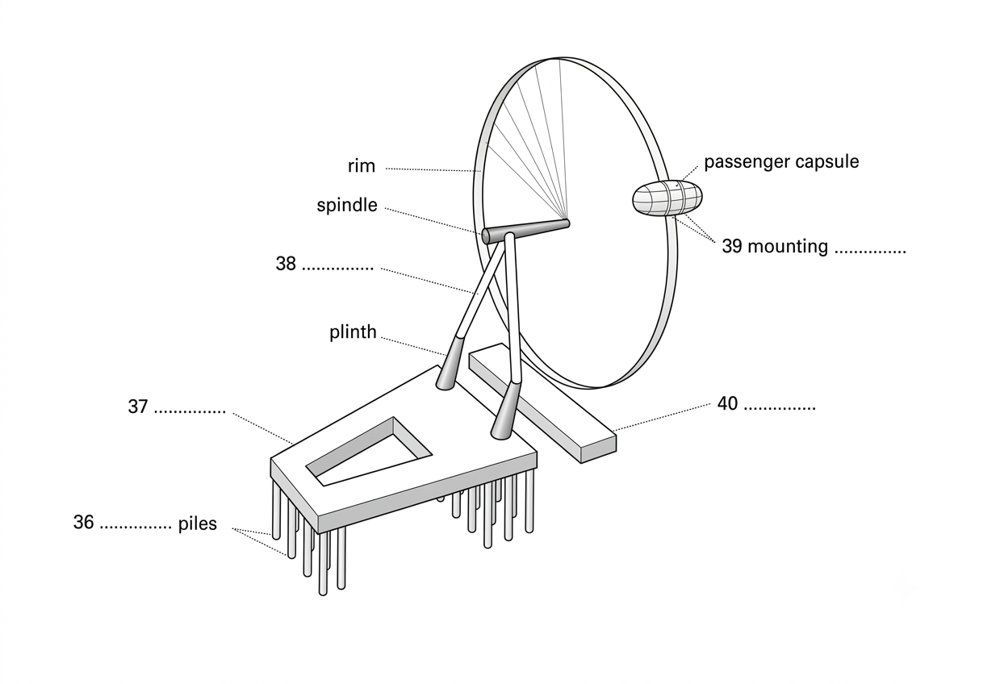

Part 4 — Questions 31–40
Complete the summary and label the diagram below.
THE LONDON EYE
Complete the summary below. Write NO MORE THAN TWO WORDS for each answer.
The architects who designed the London Eye originally drew it for a 31. in 1993.
Subsequently, they found a partnership with 32. to develop the project.
Most of its components had to be 33. , and delivering them had to be coordinated with the 34. in the River Thames.
On average, 350 hours a week are spent on maintenance of the Eye, and only 35. is used to clean the glass.
THE LONDON EYE STRUCTURE
